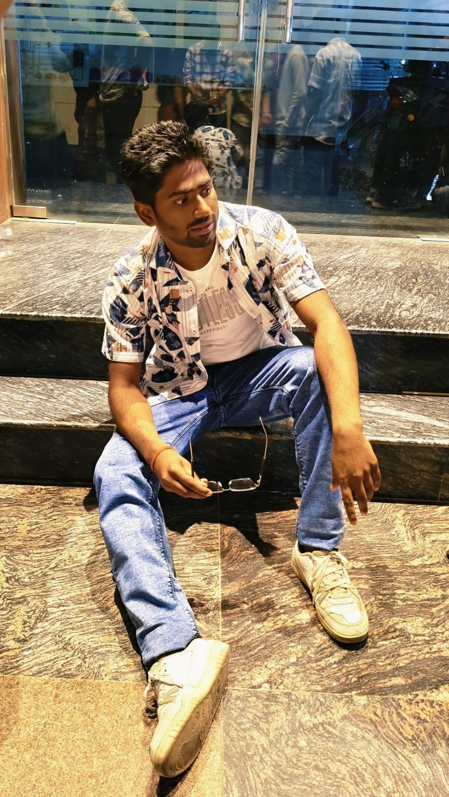

Rohit Gangwar
Download My CVI'm Full stack web Developer
I built DevTinder, a developer matchmaking platform that connects programmers based on skills and interests. The app features real-time chat, profile matching, and a clean, intuitive interface to foster meaningful collaborations.
I developed a Task Manager application to help users organize and track their daily tasks efficiently. It includes features like task creation, prioritization, deadlines, and status updates with a user-friendly interface for seamless productivity.
I created a Hospital Management System that streamlines patient records, appointment scheduling, and staff management. The system improves healthcare workflow by providing an easy-to-use platform for doctors, nurses, and administrative staff.
Hirers
Technohacks